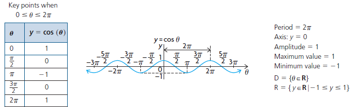

Exploring Graphs of the Primary Trigonometric Functions and Transformations of Trigonometric Functions
EXPLORING GRAPHS OF THE PRIMARY TRIGONOMETRIC FUNCTIONS
Key Idea

SELECTING A STRATEGY TO APPLY TRANSFORMATIONS AND GRAPH A SINE FUNCTION
The following transformations are applied to the graph of y = sin x where 0 ≤ x ≤ 2𝝅 :
- a vertical stretch by a factor of 3
- a horizontal compression by a factor of ½
- a horizontal translation 𝝅/6 to the left
- a vertical translation 1 down
Use the transformations above to sketch the graph of the transformed function in the interval 0 ≤ x ≤ 2𝝅
Solution:

Using the graph of a sinusoidal function to solve a problem
 A mass on a spring is pulled toward the floor and released, causing it to move up and down. Its height, in centimetres, above the floor after t seconds is given by the function h(t) = 10 sin (2𝝅t + 1.5𝝅) + 15, 0 ≤ t ≤ 3. Sketch a graph of height versus time. Then use your graph to predict when the mass will be 18 cm above the floor as it travels in an upward direction. A mass on a spring is pulled toward the floor and released, causing it to move up and down. Its height, in centimetres, above the floor after t seconds is given by the function h(t) = 10 sin (2𝝅t + 1.5𝝅) + 15, 0 ≤ t ≤ 3. Sketch a graph of height versus time. Then use your graph to predict when the mass will be 18 cm above the floor as it travels in an upward direction. |
Solution: